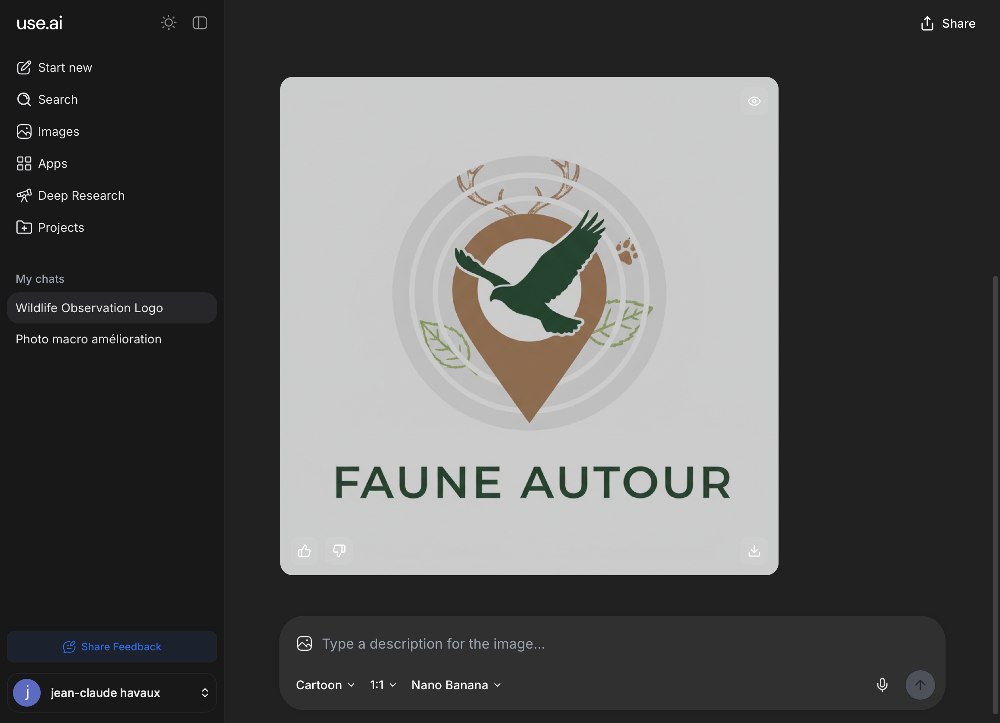

Faune Autour
Localisation en cours...
Par espèce
Explorer autour
Nom de l'animal (français ou latin)
✕
Rayon de recherche
10 km
Chercher les observations
Rayon
10 km
Période
Semaine
Mois
Année
Lister les animaux
Données :
GBIF
· incluant observations.be · carte
OpenStreetMap
✕